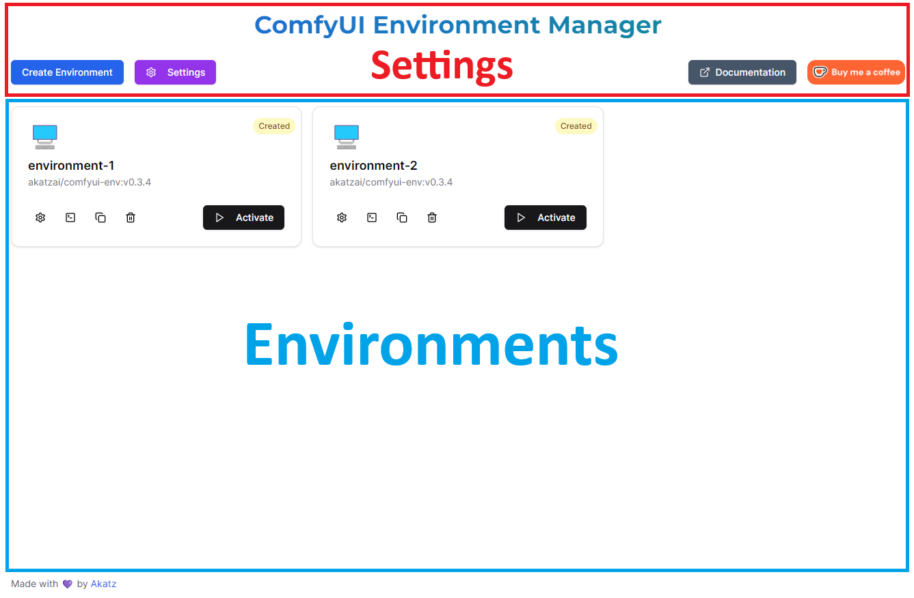
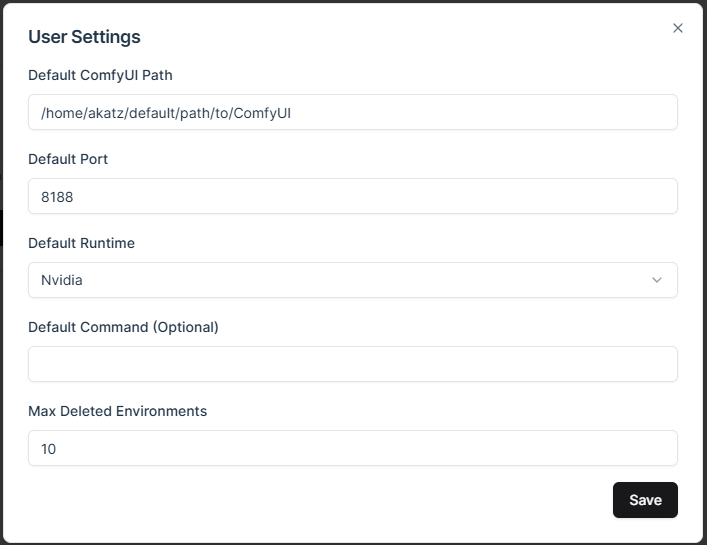
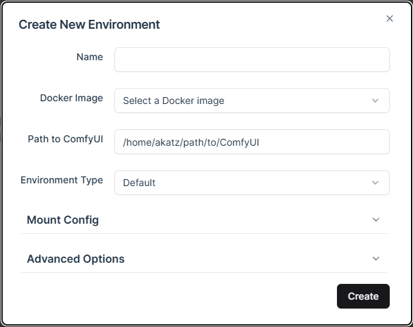
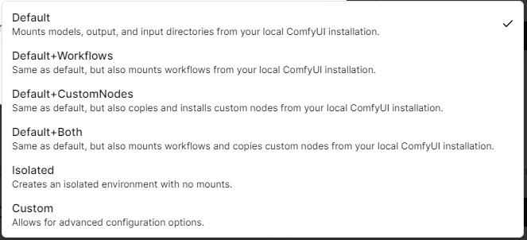
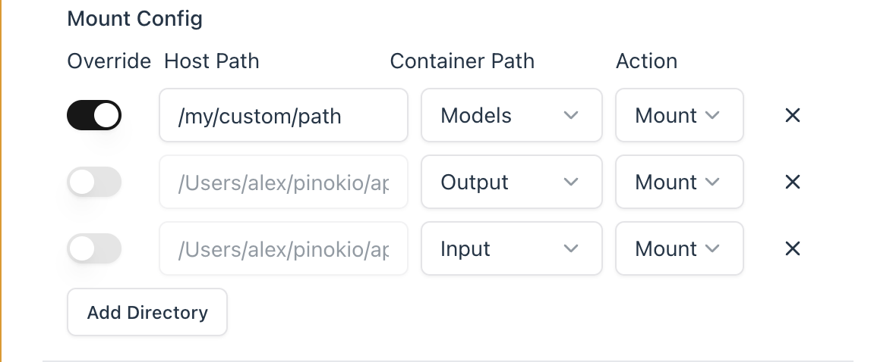
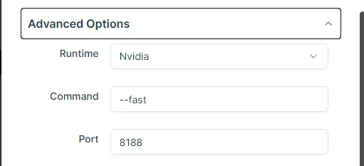

Usage Overview¶
Video Demo
Manager Layout¶
ComfyDock has two main sections:
- Settings Panel (top)
- Environments Grid (below)

Updating User Settings¶
- Open Settings tab.

- Configure Defaults:
- ComfyUI Path
- Port
- Runtime
- Start command
- Click Save.
Creating a New Environment¶
Demo Video
- Click Create Environment.

- Fill out fields:
- Name: Any text (emojis allowed).
- ComfyUI Release: Specific version or “latest”.
- Releases are based on versions of ComfyUI I have packaged into an image, not the “latest” actual comfyui release.
- Pick “latest” to grab whatever the most recent image is, otherwise you can specify an older version.
- See the list of available images on dockerhub
- If you want to build the dockerfiles locally, you can download the files from the docker repo here
- Local-built images can be specified by tag in the “Custom Docker Image” field.
- Custom Docker Image: Optional Docker image URL.
- Path to ComfyUI: A valid directory on your host machine.
- This can be any valid path to a directory on your host machine that you have write and read permissions to:
- e.g. “C:\Users\akatz\my\path\to\ComfyUI”
- If you don’t have ComfyUI already installed at the provided location, you will be prompted to install it after hitting “create”
- If you provide a path to a directory containing multiple “ComfyUI” folders, the code will select the first directory to use with the environment.
- Select an Environment Type (Default, etc.).

- If default is selected, the environment will attempt to “mount” the models, output, and input directories from your existing ComfyUI installation into the environment.
- Mounted directories can be read and written to by the environment, anything not mounted from the host machine will not be accessible by the environment.
- You can see how changing the Environment Type directly affects the Mount Config by expanding the Advanced Settings tab.
- Click Create.
Note: If you have not yet downloaded the selected ComfyUI release image, then you will be prompted to download it on create.
Mount Config¶
The Mount Config panel now provides granular control over how host directories interact with container paths, with four configurable columns per row:

Columns Explained¶
- Override (Checkbox):
- Checked: Manually specify the exact host path. Useful for non-standard directory locations.
- Unchecked: Automatically generates host path by combining your ComfyUI path with the selected container directory name (e.g., if ComfyUI path is
C:\ComfyUIand container path ismodels, host path becomesC:\ComfyUI\models).
- Host Path:
- The physical directory on your machine that will be connected to the container.
- Editable directly when Override is checked.
- Grayed out and auto-generated when Override is unchecked.
- Container Path (Dropdown):
- Predefined container locations you can map to:
/app/ComfyUI/models/app/ComfyUI/output/app/ComfyUI/input/app/ComfyUI/custom_nodes/app/ComfyUI/user
- Predefined container locations you can map to:
- Mount Action:
- Mount: Creates live sync between host and container directories (changes reflect immediately in both)
- Copy: Creates a one-time snapshot copy from host to container at environment creation
Key Behaviors¶
- Changing any Mount Config setting automatically switches Environment Type to "Custom"
- Add new mappings with Add Directory button
- Delete mappings using the ❌ icon on each row
- Container paths must be absolute paths starting with
/ - Host paths follow OS conventions (Windows:
C:\path, Linux/macOS:/path)
Mounting vs. Copying (Updated)¶
When to Use Mount:
- Frequently updated resources (models, input/output folders)
- Shared assets between environments
- Development/testing scenarios needing real-time changes
When to Use Copy:
- Creating immutable snapshots for reproducibility
- Archiving specific workflow versions
- Sharing environments with bundled dependencies
- Sensitive data that shouldn't persist in host directories
Important Notes:¶
- Copied directories become container-only - changes in host won't affect them
- Mounted custom_nodes directories trigger automatic dependency installation
- Read-only mounts (available via advanced settings) prevent accidental container modifications
Advanced Options¶

- Runtime:
NVIDIAfor GPU orNonefor CPU. - Command: Extra flags for the ComfyUI startup command, e.g.
--fastor--lowvram. - Port: The web UI port.